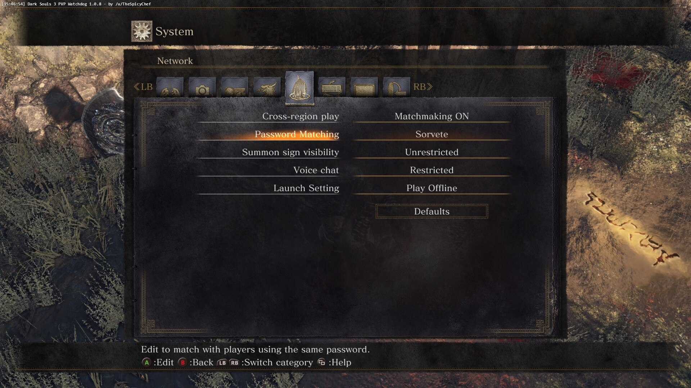

Introduction
As a beginner to Dark Souls 3, there are various tasks that can help you to progress and finish the game. These are listed below:
- Choose Knight as your starting class. Generally, your starting class only matters at the very early stages of the game. As you progress through the game, you can level up and pump your stats into those attributes you care about. For the remainder of this walkthrough, we will use Deprived as our starting class. The reason is that the Deprived starting class has a decent distribution of stats. Various useful sorceries, miracles, and pyromancies can be attuned and used by only having to equip certain rings and without having to invest some levels in various attributes. Choose "Rusted Gold Coin" as your Burial Gift. You would be given seven Rusted Gold Coins, which are immensely useful for farming certain (rare) items.
- Infuse your melee weapons with Raw Gems. A raw weapon has high base damage output, but at the cost of losing any stats scaling. You only need to invest enough points in Strength and/or Dexterity to wield the weapon. Infusing your weapon with a Raw Gem allows you to have high damage output without having to invest more points into Strength and/or Dexterity. Your raw weapon loses stats scaling. The only ways to increase the damage output of your raw weapon are: (1) upgrading it with various upgrade materials; and (2) buffing your weapon with fire, lightning, magic, etc.
- Obtain a bow or the Light Crossbow as early as possible. Many enemies in the game are usually found as mobs scattered here and there. Use a ranged weapon to pull one enemy at a time away from its mob and dispatch of enemies one at a time. As our starting class will be Deprived, we have enough stats to wield a Light Crossbow. The Longbow is available after the tutorial area of the game. A Knight or Deprived starting class character won't have enough stats to properly wield the Longbow. However, you can still use the Longbow to pull enemies one at a time. Without sufficient stats to wield the Longbow, the damage dealt to enemies would be minuscule.
- Use a shield to block if you need to, but don't rely on your shield to carry you through the whole game. Some enemies can block with their shields. One-handing your melee weapon and attacking would result in your weapon bouncing off an enemy's shield. Generally, two-handing your melee weapon is more effective against enemies that block with their shields. Your two-handed weapon won't bounce off an enemy's shield and you would still deal some damage, albeit minimum.
- Don't attack your NPCs. Exhaust each NPC's dialogue and regularly return to Firelink Shrine to talk to your NPCs.
- Read item descriptions. Experiment with items and weapons to find out how they can be used to suit your play style.
For your first playthrough, set your game to be offline by default. In the Network tab of your System menu, locate "Launch Setting" and set it to "Play Offline".

Various tasks can be done to minimize your time spent farming souls. First, defeat all enemies in each area. Second, grab all items scattered throughout an area. Many items found in an area are soul items that, once consumed, would give you certain amounts of souls.
- Be patient. Explore each area and take your time to learn attack patterns of difficult enemies. An enemy might seem tough at first and you might die to it many times. There is always an easy way to defeat any enemy. The difficult part is figuring out how.
Use the following checklist to help you keep track of your playthrough:
If you ever need to farm souls for levelling up or to purchase items, refer to the following guide:
https://steamcommunity.com/sharedfiles/filedetails/?id=2081240775